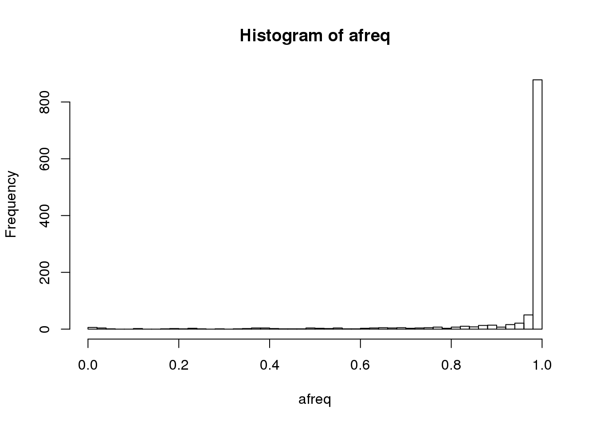

2 GDS format
GDS is Genomic Data Structure, a storage format that can efficiently store genomic data and provide fast random access to subsets of the data. For more information on GDS for sequence data, read the SeqArray package vignette.
2.1 Exploring a GDS file
To use the R packages developed at the DCC for sequence data, we first need to convert a VCF file to GDS. (If the file is BCF, use https://samtools.github.io/bcftools/bcftools.html to convert to VCF.)
library(SeqArray)
data.path <- "https://github.com/UW-GAC/analysis_pipeline/raw/master/testdata"
vcffile <- "data/1KG_phase3_subset_chr1.vcf.gz"
if (!dir.exists("data")) dir.create("data")
if (!file.exists(vcffile)) download.file(file.path(data.path, basename(vcffile)), vcffile)
gdsfile <- "data/1KG_phase3_subset_chr1.gds"
seqVCF2GDS(vcffile, gdsfile, fmt.import="GT", storage.option="LZMA_RA", verbose=FALSE)We can interact with the GDS file using the SeqArray package.
gds <- seqOpen(gdsfile)
gds## Object of class "SeqVarGDSClass"
## File: /projects/users/stephanie/Code/TOPMed/topmed_workshop_2018/data/1KG_phase3_subset_chr1.gds (70.6K)
## + [ ] *
## |--+ description [ ] *
## |--+ sample.id { Str8 1126 LZMA_ra(9.66%), 877B } *
## |--+ variant.id { Int32 1120 LZMA_ra(17.5%), 793B } *
## |--+ position { Int32 1120 LZMA_ra(78.5%), 3.4K } *
## |--+ chromosome { Str8 1120 LZMA_ra(4.55%), 109B } *
## |--+ allele { Str8 1120 LZMA_ra(26.0%), 1.2K } *
## |--+ genotype [ ] *
## | |--+ data { Bit2 2x1126x1121 LZMA_ra(8.34%), 51.4K } *
## | |--+ extra.index { Int32 3x0 LZMA_ra, 18B } *
## | \--+ extra { Int16 0 LZMA_ra, 18B }
## |--+ phase [ ]
## | |--+ data { Bit1 1126x1120 LZMA_ra(0.11%), 177B } *
## | |--+ extra.index { Int32 3x0 LZMA_ra, 18B } *
## | \--+ extra { Bit1 0 LZMA_ra, 18B }
## |--+ annotation [ ]
## | |--+ id { Str8 1120 LZMA_ra(40.4%), 3.6K } *
## | |--+ qual { Float32 1120 LZMA_ra(2.46%), 117B } *
## | |--+ filter { Int32,factor 1120 LZMA_ra(2.46%), 117B } *
## | |--+ info [ ]
## | \--+ format [ ]
## \--+ sample.annotation [ ]# the unique sample identifier comes from the VCF header
sample.id <- seqGetData(gds, "sample.id")
length(sample.id)## [1] 1126head(sample.id)## [1] "HG00096" "HG00097" "HG00099" "HG00100" "HG00101" "HG00102"# a unique integer ID is assigned to each variant
variant.id <- seqGetData(gds, "variant.id")
length(variant.id)## [1] 1120head(variant.id)## [1] 1 2 3 4 5 6# reference allele frequency of each variant
afreq <- seqAlleleFreq(gds)
hist(afreq, breaks=50)
We can define a filter on the gds object. After using the seqSetFilter command, all subsequent reads from the gds object are restricted to the selected subset of data, until a new filter is defined or seqResetFilter is called.
seqSetFilter(gds, variant.id=1:10, sample.id=sample.id[1:5])## # of selected samples: 5
## # of selected variants: 10Genotype data is stored in a 3-dimensional array, where the first dimension is always 2 for diploid genotypes. The second and third dimensions are samples and variants, respectively. The values of the array denote alleles: 0 is the reference allele and 1 is the alternate allele. For multiallelic variants, other alternate alleles are represented as integers > 1.
geno <- seqGetData(gds, "genotype")
dim(geno)## [1] 2 5 10geno[,,1:2]## , , 1
##
## sample
## allele [,1] [,2] [,3] [,4] [,5]
## [1,] 0 0 0 0 0
## [2,] 0 0 0 0 0
##
## , , 2
##
## sample
## allele [,1] [,2] [,3] [,4] [,5]
## [1,] 0 0 0 0 0
## [2,] 0 0 0 0 0The SeqVarTools package has some additional functions for interacting with SeqArray-format GDS files.
library(SeqVarTools)
# return genotypes in matrix format
getGenotype(gds)## variant
## sample 1 2 3 4 5 6 7 8 9 10
## HG00096 "0|0" "0|0" "0|0" "0|0" "0|0" "0|0" "0|0" "0|0" "0|0" "0|0"
## HG00097 "0|0" "0|0" "0|0" "0|0" "0|0" "0|0" "0|0" "0|0" "0|0" "0|0"
## HG00099 "0|0" "0|0" "0|0" "0|0" "0|0" "0|0" "0|0" "0|0" "0|0" "0|0"
## HG00100 "0|0" "0|0" "0|0" "0|0" "0|0" "0|0" "0|0" "0|0" "0|0" "0|0"
## HG00101 "0|0" "0|0" "0|0" "0|0" "0|0" "0|0" "0|0" "0|0" "0|0" "0|0"getGenotypeAlleles(gds)## variant
## sample 1 2 3 4 5 6 7 8 9 10
## HG00096 "C|C" "C|C" "C|C" "C|C" "T|T" "G|G" "G|G" "A|A" "A|A" "C|C"
## HG00097 "C|C" "C|C" "C|C" "C|C" "T|T" "G|G" "G|G" "A|A" "A|A" "C|C"
## HG00099 "C|C" "C|C" "C|C" "C|C" "T|T" "G|G" "G|G" "A|A" "A|A" "C|C"
## HG00100 "C|C" "C|C" "C|C" "C|C" "T|T" "G|G" "G|G" "A|A" "A|A" "C|C"
## HG00101 "C|C" "C|C" "C|C" "C|C" "T|T" "G|G" "G|G" "A|A" "A|A" "C|C"refDosage(gds)## variant
## sample 1 2 3 4 5 6 7 8 9 10
## HG00096 2 2 2 2 2 2 2 2 2 2
## HG00097 2 2 2 2 2 2 2 2 2 2
## HG00099 2 2 2 2 2 2 2 2 2 2
## HG00100 2 2 2 2 2 2 2 2 2 2
## HG00101 2 2 2 2 2 2 2 2 2 2altDosage(gds)## variant
## sample 1 2 3 4 5 6 7 8 9 10
## HG00096 0 0 0 0 0 0 0 0 0 0
## HG00097 0 0 0 0 0 0 0 0 0 0
## HG00099 0 0 0 0 0 0 0 0 0 0
## HG00100 0 0 0 0 0 0 0 0 0 0
## HG00101 0 0 0 0 0 0 0 0 0 0# look at reference and alternate alleles
refChar(gds)## [1] "C" "C" "C" "C" "T" "G" "G" "A" "A" "C"altChar(gds)## [1] "G" "T" "T" "T" "C" "A" "A" "T" "C" "T"# reset the filter to all variants and samples
seqResetFilter(gds)## # of selected samples: 1,126
## # of selected variants: 1,120# how many alleles for each variant?
n <- seqNumAllele(gds)
table(n)## n
## 2 3 4
## 1099 20 1# some variants have more than one alternate allele
multi.allelic <- which(n > 2)
altChar(gds)[multi.allelic]## [1] "GT,G" "G,T" "A,T"
## [4] "A,T" "ATG,ATGTG" "C,G"
## [7] "A,T" "C,T" "A,C"
## [10] "TAA,T" "GTTA,GTTT" "GCC,GCCC,G"
## [13] "A,C" "A,C" "A,C"
## [16] "CAAGCAT,CGAGCAT" "CATTATT,C" "AT,C"
## [19] "TGTGA,C" "CCATT,CCATTCATT" "C,G"# extract a particular alternate allele
# first alternate
altChar(gds, n=1)[multi.allelic]## [1] "GT" "G" "A" "A" "ATG" "C" "A"
## [8] "C" "A" "TAA" "GTTA" "GCC" "A" "A"
## [15] "A" "CAAGCAT" "CATTATT" "AT" "TGTGA" "CCATT" "C"# second alternate
altChar(gds, n=2)[multi.allelic]## [1] "G" "T" "T" "T" "ATGTG"
## [6] "G" "T" "T" "C" "T"
## [11] "GTTT" "GCCC" "C" "C" "C"
## [16] "CGAGCAT" "C" "C" "C" "CCATTCATT"
## [21] "G"# how many variants are SNVs vs INDELs?
table(isSNV(gds, biallelic=TRUE))##
## FALSE TRUE
## 110 1010table(isSNV(gds, biallelic=FALSE))##
## FALSE TRUE
## 99 1021# 11 SNVs are multi-allelic2.2 Exercises
Set a filter selecting only multi-allelic variants. Inspect their genotypes using the different methods you learned above. Use the
alleleDosagemethod to find dosage for the second (and third, etc.) alternate allele.Use the
hwefunction in SeqVarTools to run a Hardy-Weinberg Equilibrium test on each variant. Identify a variant with low p-value and inspect its genotypes. (Note that the HWE test is only valid for biallelic variants, and will returnNAfor multiallelic variants.)
seqClose(gds)